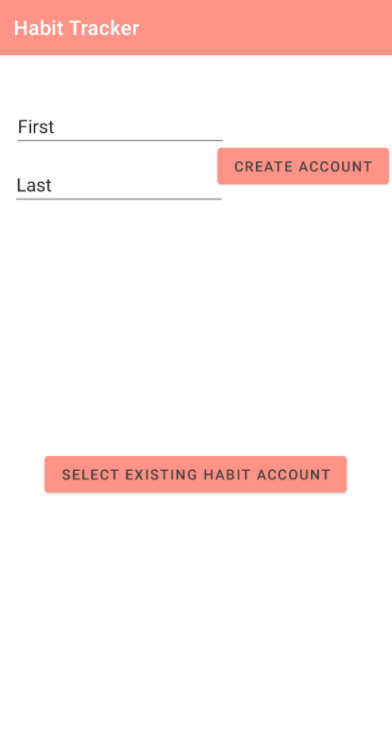
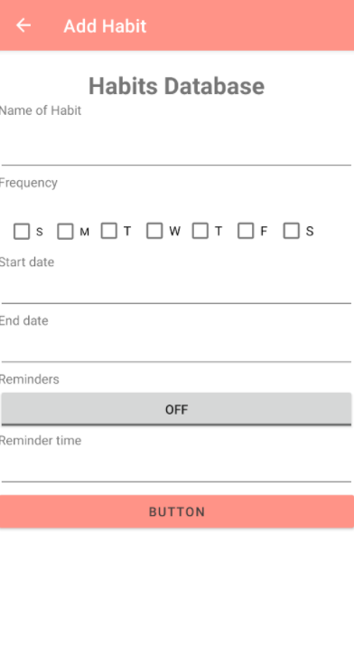
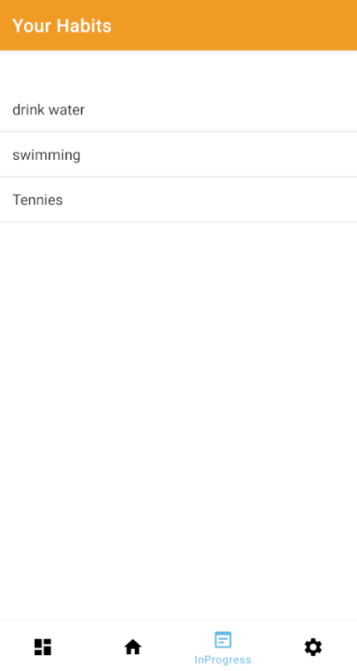
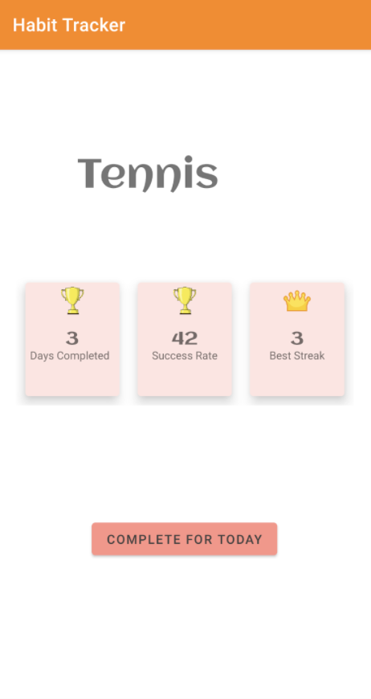
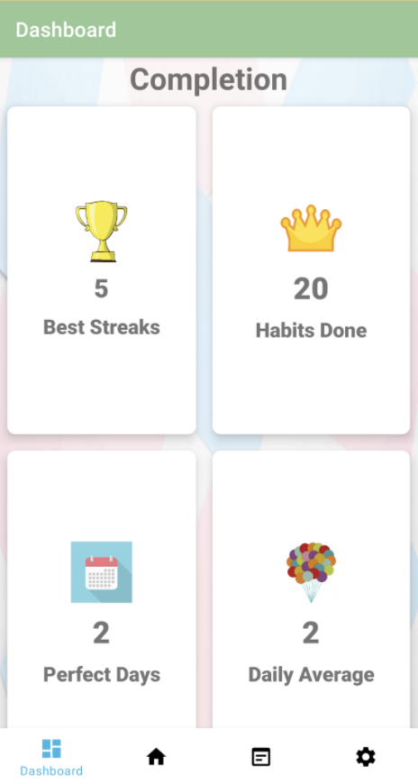
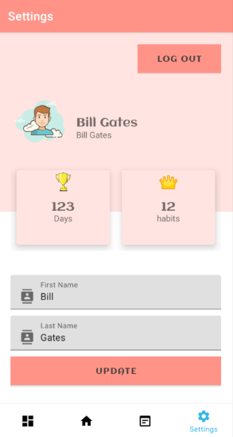

Process all text files in a directory and its
subdirectories, cleans and parses the text
into word stems and builds an in-memory inverted index to store the mapping from
word
stems to the documents and position within those documents where those word stems
were found.
Exact & Partial Search
Support exact search and partial search. This part of the
program also tracks the total
number of words found in each text file, parses and stems a query file and generates
a sorted list of search
results from the inverted index, and supports writing those results to a JSON file.
Multithread
Support multithreading. This part of the program makes a
thread-safe inverted index
and uses work queues to build and search an inverted index using multiple threads.
Web Crawler
Multithreaded work queue using a work queue that builds an
inverted index from a seed URL.
Search Engine (in progress)
Web interface using embedded Jetty and servlets. Display a
web page with a form where users may
enter a multi-word search query and a button to submit that query to the web server.
When the button is clicked,
send the queries to a Jetty servlet and process those queries to match how the data
is stored by the inverted index.
The servlet should retrieve the partial search results of those queries from the
index and return the results to the client
as dynamically generated HTML with sorted and clickable links.
For a thorough explanation of the
project please click the button below
To see the github repository (as
github gist) click on the github icon
Habit Tracker
Microsoft
I was part of an 8-week mentorship with Microsoft on their 2021 Summer Project
Challenge.
Habit Tracker
We created a mobile application which allowed users to create an account, create
habits and track them.
The application allowed the user to create, modify and delete habits.
It kept track of the days completed, success rate, best streak, habits completed and
"perfect" days.






For a thorough explanation of the
project please click the button below
To see the github repository click
on the github icon
Machine Learning KNN Model
Overview
I built a machine learning model from scratch using the K-nearest-neighbor method.
The model only took 2-dimensional data or data with only two features.
Model
The model contains 4 functions: train (the data used to train the model), test (the
data used
as baseline to test for accuracy and precision), getAccuracy and getPrecision
Read Data
To read from a CSV file and store the data in a collection of “datapoint” classes,
I used the Scanner class along with an iterator to read through the file.
Train & test split
To split the data, I generated a random number between 0-1
and added the datapoint
object to the train set if it was less than some threshold (.9) and add it to the
test otherwise
KNN algorithm
1. Assume that the input is a single data point
2. Compute the distance between the point in test versus every point in the training
set and store both the distance and the label into a 2D Array.
3. Sort the 2D array storing the distance and the label
4. Find the labels of the first “K” elements in the 2D distances array and return
the label that occurs the most in String format
getAccuracy & getPrecision
If the label from the test returns 1 & the label of the datapoint is 1 = true positive
If the label from the test returns 1 & the label of the datapoint is 0 = false positive
If the label from the test returns 0 & the label of the datapoint is 1 = false negative
If the label from the test returns 0 & the label of the datapoint is 0 = true negative
for accuracy: (truePositive + trueNegative) / (truePositive + trueNegative + falsePositive + falseNegative)
for precision: truePositive / (truePositive + falseNegative)
For a thorough explanation of the
project please click the button below
To see the github repository
click on the github icon